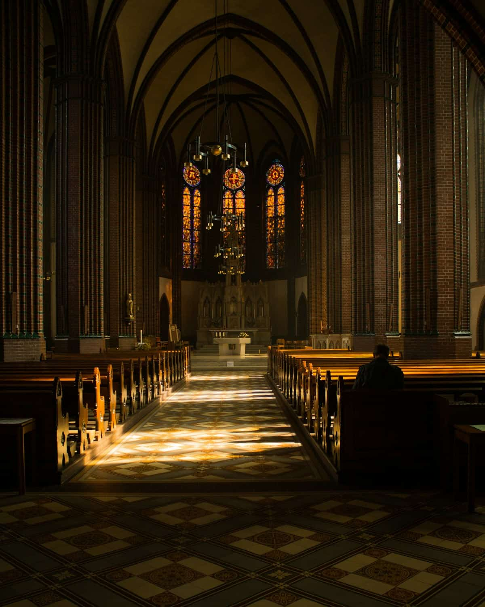
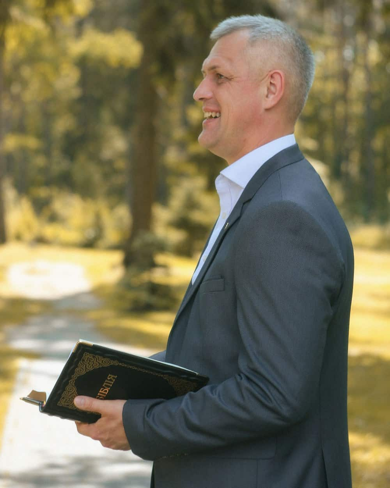

Church Green, Barwick · Ordinary Time
Open every day from nine until dusk, whether or not anything is happening in it. Five services a week, a choir that has sung here since 1871, and a door that is genuinely never locked in daylight.
Nobody is asked to sign anything, and nobody is counted.
Ten o'clock on Sunday, sung, about seventy-five minutes. The main service of the week and the one most people mean when they say they came to church.
All five servicesSix in the evening, from the Book of Common Prayer, sung by the choir. Forty-five minutes in which nothing is asked of you at all — a good deal of the congregation comes for exactly that.
The choir and the organOpen nine until dusk, every day. People come in to sit, to light a candle, to get out of the rain, and to look at a building their great-grandparents paid for. That counts.
Before you come
Vicar since 2021
I said the office in an empty church for the first eighteen months I was here, and I would still be doing it if nobody had joined in. That is roughly what a parish church is: something kept going on the assumption that it is worth keeping going.
Ring the office if you want to talk about anything at all — a wedding, a funeral, a doubt, or the state of the roof.
More about the parishAnd so, since you are reading this on it, does this website.
Every parish church changes colour six times a year. The frontal on the altar, the stole the priest wears, the burse and the veil — violet through Advent and Lent, gold at Christmas and Easter, red at Pentecost, green for the long green weeks between.
It is the oldest piece of information design the church has, and it is how a congregation knows where it is in the story without being told. This site keeps it: the panel at the top of the front page is whatever colour the church is today.
The services people travel for.
“I come to Evensong and I leave before the coffee. Eight years now. Nobody has ever once asked me why, which is the reason I keep coming.”
“We got married here because my grandmother did. I expected a form-filling exercise and got two evenings of proper conversation instead.”
Usually at the door, usually on the way out.
No. Anyone who would normally receive communion in any church is welcome to receive it here, and anyone who would rather not is welcome to come up for a blessing or stay where they are. Nobody watches.
Whatever they arrived in. The 8 o'clock is slightly tweedier than the 10 o'clock and nobody has ever remarked on either.
Step-free through the south porch, an accessible WC in the north aisle, a hearing loop throughout and large-print books at the back. The tower and the gallery are not accessible and cannot be made so. Ring ahead and anything else can be arranged.
They are welcome in everything and nobody minds noise in a building this size. Sunday school meets during the 10 o'clock in the church hall and comes back for communion. Everyone working with children is DBS-checked and our safeguarding policy is on the about page.
A plate is passed during one hymn. Visitors are asked not to give — you are a guest, and the building has stood for six hundred years without your contribution.
That is a normal condition of being in a church, including for some of the people at the front. Nothing here requires you to declare a position.